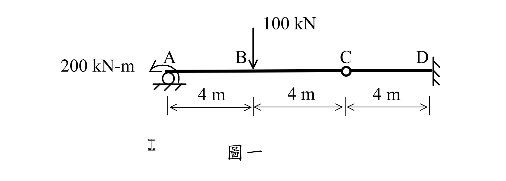

考題編號：SA-2024-1
主分類： SA-U1 靜定結構分析
副分類： SA-U2 變位分析
分析法： 靜定分析 / 共軛梁法
標籤： 靜定梁, 內部鉸, 最大位移, 共軛梁法, 懸臂梁
1. 原始題目重述 (Problem Restatement)
如圖一所示之梁，假設斷面 EI 值為常數。不論向下之位移或是向上之位移，其最大值都不能超過梁長之 1/300，也就是最大容許位移值=40 mm。試求滿足該位移限制之最小 EI 值。（25 分）

圖說：結構總長 12m。A點為滾支承並受 200 kN-m 逆時針集中彎矩；B點受向下 100 kN 集中力；C點為內部鉸；D點為固定端。AB、BC、CD 段長度均為 4m。
2. 考題核心精神與出題者意圖 (Core Concepts & Examiner's Intent)
本題主要測驗考生對靜定結構受力分析與位移計算的綜合能力。出題者透過設置內部鉸（C點），將結構拆分為主要結構（懸臂梁 CD）與附屬結構（簡支梁 AC），測驗考生能否正確分離自由體並計算支承反力。接著，透過求「最大位移」，測驗考生對共軛梁法或直接積分法的掌握，尤其是當結構存在剛體旋轉（因支承點發生位移）時，能否正確疊加相對變位與剛體位移，找出發生最大變位的精確位置。
3. 解題戰略地圖與陷阱分析 (Strategic Roadmap & Trap Analysis)
- 靜定分析拆解：從內部鉸 C 點將結構拆開。先解左側 AC 梁（附屬結構），求出 C 點的內力（剪力），再將其反向施加於右側 CD 梁（主要結構）。
- 位移計算策略：
- 先計算懸臂梁 CD 在 C 點的垂直位移 $\Delta_C$。
- AC 梁的總位移等於「AC 兩端點連線的剛體位移」加上「AC 梁相對連線的彈性變形」。
- 利用共軛梁法求出 AC 梁的彈性變形與斜率方程式。 - 陷阱分析：
- 符號與方向判斷：A 點的 200 kN-m 為逆時針彎矩，若方向判斷錯誤，整個彎矩圖將顛倒。
- 最大位移位置判斷：最大位移不一定在載重點 B 或鉸接點 C。必須寫出 AC 梁的位移方程式並令斜率為零，找出極值點，再與 C 點的位移進行比較，取絕對值最大者。
3.5 變數層次分析 (Variable Hierarchy Analysis)
最終目標
求出全梁絕對值最大的變位 $\Delta_{max}$ 的表示式（含 EI），並令其小於等於 40 mm，反推最小 EI 值。
本題關鍵公式（依計算順序）
$$ \Delta_C = \frac{P L_{CD}^3}{3EI} \quad \text{(懸臂梁端點位移)} $$
$$ \rho_{AC} = \frac{\Delta_C - \Delta_A}{L_{AC}} \quad \text{(AC段剛體旋轉角)} $$
$$ \theta_{rel}(x) = \frac{1}{EI} \left( R_A^* - \int_0^x M(\xi) d\xi \right) \quad \text{(相對剛體連線之斜率)} $$
$$ y'(x) = \theta_{rel}(x) + \rho_{AC} \quad \text{(絕對斜率)} $$
$$ \boxed{y'(x)} = 0 \implies x_{max} \quad \text{(求極值位置)} $$
L1：題目直接給定
| 符號 | 數值 | 說明 |
|---|---|---|
| $L_{AC}$ | $8\text{ m}$ | AC 梁長度 |
| $L_{CD}$ | $4\text{ m}$ | CD 懸臂梁長度 |
| $M_A$ | $200\text{ kN-m}$ | A點逆時針集中彎矩 |
| $P_B$ | $100\text{ kN}$ | B點向下集中載重 |
| $\Delta_{allow}$ | $0.04\text{ m}$ | 最大容許位移 (40 mm) |
L2：需知識點推導
| 符號 | 公式／來源 | 卡關? |
|---|---|---|
| $V_C$ | AC 段 $\Sigma M_A = 0$ 與 $\Sigma F_y = 0$ | |
| $\Delta_C$ | 懸臂梁受端點力 $V_C$ 之變位 | |
| $M(x)$ | 靜力平衡分段切面法 | |
| $R_A^*$ | 共軛梁法求 A 點假想反力 |
L3：深層知識（不懂就卡住）
| 知識點 | 說明 | 卡關? |
|---|---|---|
| 剛體位移疊加 | 鉸 C 點下沉會造成 AC 梁整體產生剛體旋轉，計算 AC 段絕對斜率與位移時必須疊加此效應。 | |
| 極大值判定 | 最大位移必發生在絕對斜率 $y'(x)=0$ 處，需解一元二次方程式找精確位置。 |
4. 步驟化詳細計算過程 (Step-by-Step Detailed Calculation)
Step 1: 結構靜力分析與反力求解
將結構於內部鉸 C 點拆開，分為 AC 簡支段與 CD 懸臂段。
對 AC 段取自由體圖：
-
$\Sigma M_C = 0$ (逆時針為正)：
$200 + 100 \times 4 - R_A \times 8 = 0 \implies R_A = 75 \text{ kN} (\uparrow)$ -
$\Sigma F_y = 0$ (向上為正)：
$R_A - 100 + V_C = 0 \implies 75 - 100 + V_C = 0 \implies V_C = 25 \text{ kN} (\uparrow \text{，對 AC 梁})$
根據作用力與反作用力，AC 梁對 CD 梁在 C 點施加向下的 $25 \text{ kN}$ 集中力。
Step 2: 彎矩方程式 $M(x)$
以 A 點為原點 ($x=0$)：
-
$0 \le x \le 4$ (AB段)：
$M(x) = 75x - 200$ -
$4 \le x \le 8$ (BC段)：
$M(x) = 75x - 200 - 100(x-4) = 200 - 25x$
Step 3: 求 C 點位移 $\Delta_C$ 與 AC 段剛體旋轉角 $\rho$
CD 段為懸臂梁，受自由端 C 向下 $25 \text{ kN}$ 力量：
$$ \Delta_C = \frac{V_C L_{CD}^3}{3EI} = \frac{25 \times 4^3}{3EI} = \frac{1600}{3EI} \text{ (向下)} $$
AC 段兩端位移為 $\Delta_A = 0$, $\Delta_C = \frac{1600}{3EI} (\downarrow)$。
產生順時針剛體旋轉角：
$$ \rho = \frac{\Delta_C - \Delta_A}{8} = \frac{200}{3EI} \text{ (順時針)} $$
Step 4: 利用共軛梁法求 AC 段彈性變形
建立 AC 段之共軛梁，載重 $q(x) = M(x)/EI$。
求共軛梁 A 點之反力 $R_A^*$ (代表 A 點相對連線之斜率 $\theta_A$)：
對 C 點取彎矩 $\Sigma M_C = 0$：
$$ R_A^* \times 8 - \int_0^8 \frac{M(x)}{EI} (8-x) dx = 0 $$
分段積分：
$$ \int_0^4 (-200 + 75x)(8-x) dx = \int_0^4 (-1600 + 800x - 75x^2) dx = \left[ -1600x + 400x^2 - 25x^3 \right]_0^4 = -1600 $$
$$ \int_4^8 (200 - 25x)(8-x) dx = \int_4^8 (1600 - 400x + 25x^2) dx = \left[ 1600x - 200x^2 + \frac{25}{3}x^3 \right]_4^8 = \frac{1600}{3} $$
總和為 $-1600 + \frac{1600}{3} = -\frac{3200}{3}$。
$$ R_A^* = \frac{1}{8} \left( -\frac{3200}{3EI} \right) = -\frac{400}{3EI} \text{ (逆時針)} $$
Step 5: 建立 AC 段絕對斜率與位移方程式
定義向下位移為正，順時針斜率為正。
絕對斜率 $y'(x) = \theta_{rel}(x) + \rho = \frac{1}{EI} (R_A^* - \int_0^x M(\xi)d\xi) + \rho$。
對於 $4 \le x \le 8$ (BC段)：
$$ \int_0^x M(\xi)d\xi = \int_0^4 (-200+75\xi)d\xi + \int_4^x (200-25\xi)d\xi = -200 + \left[ 200\xi - 12.5\xi^2 \right]_4^x = -800 + 200x - 12.5x^2 $$
$$ EI y'(x) = -\frac{400}{3} - (-800 + 200x - 12.5x^2) + \frac{200}{3} = 12.5x^2 - 200x + \frac{2200}{3} $$
對斜率積分得位移 $y(x)$，代入邊界條件 $y(8) = \frac{1600}{3EI}$：
$$ EI y(x) = \frac{12.5}{3}x^3 - 100x^2 + \frac{2200}{3}x - \frac{3200}{3} $$
Step 6: 尋求最大位移位置與數值
令 $y'(x) = 0$ 找極值：
$$ 12.5x^2 - 200x + \frac{2200}{3} = 0 \implies x^2 - 16x + \frac{176}{3} = 0 $$
解得 $x = 8 - \frac{4}{\sqrt{3}} \approx 5.691 \text{ m}$ (另一根 $>8$ 不合)。
【巧算技巧】
為避免直接代入 $x$ 產生繁雜計算，令 $u = 8-x$ (即自 C 點向左之局部坐標)，將位移函數對 $x=8$ (即 C 點) 進行泰勒展開：
$$ EI y(8-u) = EI y(8) - EI y'(8) u + \frac{EI y''(8)}{2} u^2 - \frac{EI y'''(8)}{6} u^3 $$
已知 C 點條件：
- $EI y(8) = \frac{1600}{3}$
- $EI y'(8) = -\frac{200}{3}$ (由 Step 5 算式代 $x=8$ 得出)
- $EI y''(8) = -M(8) = 0$
- $EI y'''(8) = -V(8) = -(-25) = 25$
故位移方程式可簡化為：
$$ EI y(u) = \frac{1600}{3} + \frac{200}{3}u - \frac{25}{6}u^3 $$
將極值位置 $u = \frac{4}{\sqrt{3}}$ 代入：
$$ EI y_{max} = \frac{1600}{3} + \frac{200}{3}\left(\frac{4}{\sqrt{3}}\right) - \frac{25}{6}\left(\frac{64}{3\sqrt{3}}\right) = \frac{1600}{3} + \frac{800}{3\sqrt{3}} - \frac{1600}{18\sqrt{3}} = \frac{1600}{3} + \frac{1600}{9\sqrt{3}} $$
$$ EI y_{max} = 533.333 + 102.643 = 635.976 \text{ kN-m}^3 \text{ (向下)} $$
(經檢驗，AB 段極大向上位移僅為 -11.62/EI，且 CD 段最大位移為 C 點的 533.33/EI，故全梁最大絕對位移為 635.976/EI)
Step 7: 計算最小 EI 值
題目要求最大容許位移 $\Delta_{allow} = \frac{L}{300} = \frac{12000}{300} = 40 \text{ mm} = 0.04 \text{ m}$。
$$ \frac{635.976}{EI} \le 0.04 \implies EI \ge \frac{635.976}{0.04} = 15899.4 \text{ kN-m}^2 $$
$$ \boxed{EI_{min} = 15900 \text{ kN-m}^2} $$
(註：精確值為 15899.4，實務上可寫 15900)
5. 關鍵爭議點與進階探討 (Critical Issues & Advanced Discussion)
- 內部鉸 (Internal Hinge) 的判別：圖中 C 點僅有圓圈而無地平線符號，應判斷為內部鉸而非滾支承。若誤判為滾支承，結構將變成靜不定，不但計算極度繁雜，也偏離出題本意。
- 剛體旋轉的遺漏：很多考生在計算 AC 段變位時，會忘記 C 點本身已經因為 CD 段懸臂端受力而產生了向下變位，導致 AC 梁發生剛體旋轉。只算彈性變位會導致極值位置與數值完全錯誤。
- 最大變位點的數學解法：在解一元二次方程式找極值點時，保留根式 $x = 8 - \frac{4}{\sqrt{3}}$ 代入多項式，可以透過泰勒展開或代數變換大幅簡化計算過程（令 $u = 8-x$），直接得到精確解 $\frac{1600}{3} + \frac{1600}{9\sqrt{3}}$，完美避免計算機小數進位誤差。